library("nfidd.nowcasting")
library("dplyr")
library("tidyr")
library("ggplot2")
library("tidybayes")
library("purrr")Jointly fitting multiple data sources
Introduction
So far we have estimated the reproduction number from a single observed time series. In reality we often observe an outbreak through several surveillance data sources at once: confirmed cases, deaths, and a wastewater signal, each a delayed, scaled view of the same underlying epidemic.
Rather than reach straight for a model that swallows all of these at once, in this session we follow one proposed modelling workflow. We start from the question we are trying to answer, sketch what a model for it might look like, and then build that model up in parts: fitting each data source on its own, linking two together through a shared latent infection process, and finally exposing what happens when data sources disagree. This is the modelling idea behind tools such as epidemia, which jointly models cases and deaths from a shared renewal process (Scott et al. 2021).
Slides
Objectives
The aim of this session is to develop a joint model of several surveillance data sources the way a modeller might: question first, then a sketch of a model for it, then building it up one data source at a time, checking what each step buys us and what happens when data sources conflict.
NoteSetup
Source file
The source file of this session is located at sessions/multiple-data-sources.qmd.
Libraries used
In this session we will use the nfidd.nowcasting package to access stan models and helper functions, the dplyr and tidyr packages for data wrangling, the ggplot2 library for plotting, the tidybayes package for extracting results of the inference, and the purrr package for functional programming.
Tip
The best way to interact with the material is via the Visual Editor of RStudio.
Initialisation
We set a random seed for reproducibility. Setting this ensures that you should get exactly the same results on your computer as we do. We also set an option that makes cmdstanr show line numbers when printing model code. This is not strictly necessary but will help us talk about the models.
set.seed(123)
options(cmdstanr_print_line_numbers = TRUE)
options(cmdstanr_warn_inits = FALSE)The question we are trying to answer
Before reaching for a model we need to be explicit about what we want from it. Our research question and target estimands are the same as in earlier sessions: we want to recover the latent infection trajectory and the reproduction number \(R_t\) that drives it, as quickly and with as little bias as we can.
No single data source gives us a perfect view of those quantities: each is a delayed, scaled and noisy window on the same infections, and we look at what each one measures in the next section. The promise of using them together is that the timely-but-noisy data sources sharpen our estimate of the recent trajectory while the stable-but-delayed data sources anchor the longer-term level. The question for this session is therefore not just “can we fit several data sources?” but “what does each data source add, and what happens when they pull in different directions?”.
A workflow for building the model
Throughout this course we have been building models iteratively — each session added a piece and we checked it. That is, informally, the Bayesian workflow: the iterative loop of building, checking, and revising a model (Gelman et al. 2026).
Here we make that explicit. Fitting several data sources is one step in a wider, iterative workflow for building, checking and comparing infectious disease models (Abbott et al. 2026) — a recently proposed, infectious-disease-specific instance of that loop. It is one proposed workflow rather than the only way to build a model, but it gives us a concrete order to work in, so it is worth looking at before we write any code.

a-workflow-for-infectious-disease-modelling repository (Abbott et al. 2026) under the MIT licence.There is a lot going on in this diagram, and we will not touch every box in one session. The point is not to memorise it but to take from it an order of work: according to this approach, a model for our question is assembled from a handful of pieces, roughly as follows.
- Research question and target estimands. We fixed these above: latent infections and \(R_t\).
- Process model. A single shared epidemic process, a geometric random walk on \(R_t\) feeding the renewal equation, so there is one infection trajectory underneath everything (next section).
- Data source selection. Catalogue the data sources available to us (cases, deaths, wastewater) and what each one measures and how it is biased.
- Observation model per source. For each data source, a delay (infection to observation), a scaling (what fraction of infections, on what scale) and a likelihood. These are separate sub-models, one per data source.
- Modularisation. Break the model into those sub-models so each can be built and checked on its own.
- Inference and computation choices. How we fit the model (here, Hamiltonian Monte Carlo via Stan).
- Implementation. Write the model, mapping each DAG component to code.
- Model validation. Check each piece against data, fitting each data source on its own to see whether it recovers the shared process before we combine anything.
- Data integration. Only once the pieces work do we choose how to combine the per-source observation models. The diagram flags two things here: the choice of how to integrate sources, and a feedback arrow warning that conflict between data sources reveals model misspecification.
We work through these in the session, revising earlier steps as later ones send us back.
The process model
The first modelling step, once the question is fixed, is the process model, the latent epidemic we want to recover before any data enter. We reuse the process from the renewal equation session. A geometric random walk on the reproduction number \(R_t\) drives a single shared latent infection trajectory through the renewal equation, so one \(R_t\) path and one infection series sit underneath everything that follows.
Fixing this shared process first is what lets several data sources inform the same infections. Every data source we add later is a delayed, scaled view of this one trajectory, rather than a separate epidemic of its own.
NoteMathematical definition
The shared process is a geometric random walk on \(R_t\) feeding the renewal equation: \[
\log R_t = \log R_{t-1} + \sigma_{rw}\,\epsilon_t, \quad \epsilon_t \sim \mathrm{Normal}(0, 1),
\] \[
I_t = R_t \sum_{s \ge 1} I_{t-s}\, g(s),
\] where \(g\) is the generation-time PMF and \(\sigma_{rw}\) the random-walk standard deviation. Because we start mid-outbreak, the sum needs infections from before day one, so we seed the first gen_time_max days with an exponential-growth history \(I_t = I_0^{\text{seed}}\,e^{\rho(t - t_{\text{seed}})}\) (estimated level \(I_0^{\text{seed}}\) and initial growth rate \(\rho\)) rather than a single starting value.
Reviewing our data sources
The workflow’s data source selection step asks us to catalogue the data sources we have and, for each, what it measures and how it is biased, before we commit to an observation model for it. Each data source will be one of the branches in the DAG we design next, and reviewing them now tells us what delay, scaling and likelihood each branch will need.
- Confirmed cases are timely, with a short infection-to-report delay, but only an ascertained fraction of infections is ever confirmed, and that fraction depends on testing capacity and policy. They pin down the timing of recent infections but carry reporting noise.
- Deaths are a more stable, less noisy signal, but arrive with a long infection-to-death delay and capture only a small, severity-dependent fraction of infections (the infection fatality ratio). They say little about the present but anchor the longer-term level.
- Wastewater measures shed pathogen concentration, so it does not depend on testing or care-seeking at all and picks up infections regardless of ascertainment. It is a continuous signal on its own scale, is relatively indirect and noisy, and needs a scaling before it can be compared to infections.
Each is a delayed, scaled and noisy window on the same infections, which is what makes combining them worthwhile: the timely data sources sharpen the recent trajectory while the stable ones anchor the level.
TipTake a few minutes
If you could only bring in these data sources one at a time, in what order would you investigate them, and why?
NoteSolution
There is no single right answer: it depends on timeliness, how easily you can get the data, and what stakeholders will act on.
- Deaths are the most stable and least noisy, so they are often the safest first choice.
- Cases are the more traditional starting point and are timely, though noisier and dependent on testing.
- Wastewater is attractive but is not grounded to anything directly actionable for public health, so it often comes last.
Designing a DAG of the observation process
With the data sources catalogued, the next step is to draw those relationships as a directed acyclic graph (DAG): a picture of how each quantity generates the next, from the shared process at the top down to the observations at the bottom. For our question the DAG is small. A geometric random walk on \(R_t\) drives a single shared latent infection series \(I\) through the renewal equation. Each data source then takes that same \(I\), passes it through its own delay and scaling to give an expected signal, and observes that signal through its own likelihood: cases as overdispersed (negative binomial) counts, deaths as Poisson counts, wastewater as a log-normal concentration.
NoteWhat is a DAG?
A directed acyclic graph draws a model as a picture. Each quantity, observed or latent, is a node, and a directed arrow runs from each quantity to the one it helps generate. Reading the arrows off the graph shows how the data are generated and makes the model’s conditional independence assumptions explicit. A model DAG is, in effect, the TLDR of the model. See Abbott et al. (2026) for how DAGs structure process and observation models in a state-space framework.
NoteParallel (joint) vs sequential modelling
The DAG above is one choice of how the data sources relate to each other; it is worth being explicit about the alternative.
In a parallel model – the approach we use in this session – every data source is its own convolution of the shared latent infections, and the data sources are conditionally independent given those infections. Schematically:
\[ \text{cases}_t \sim f\big(\text{convolve}(I, p_\text{cases})\big), \qquad \text{deaths}_t \sim g\big(\text{convolve}(I, p_\text{deaths})\big) \]
Both cases and deaths look directly at the same infections \(I\), each through their own delay distribution \(p\). Once we condition on \(I\), knowing the cases tells us nothing extra about the deaths: all the shared information flows through the infections.
In a sequential model, by contrast, one data source is modelled as a convolution of another data source rather than of the infections, for example
\[ \text{deaths}_t \sim g\big(\text{convolve}(\text{cases}, p)\big), \]
chaining deaths off cases instead of off the shared infections.
Which should you choose? The question is whether it is valid to treat one data source as generated from another.
- A parallel model assumes only that each data source is a delayed, scaled view of the same infections, which is usually a safe assumption for cases, deaths and wastewater.
- A sequential model additionally assumes one data source is generated from another.
These are two ends of a spectrum rather than a hard choice. The naive extreme is chaining a data source off reported cases, which is usually hard to justify because reported cases are themselves an incomplete, delayed observation rather than the truth. But there is useful ground in between. You can chain one signal off a latent, de-noised version of another – for example modelling deaths as arising from the estimated infections that the cases inform, rather than from raw case counts – or pass the posterior from one model as an informative prior into the next (the pipeline approach). These keep some sequential structure without pretending that a reported data source is the truth.
The trade-off is really about the validity of that generative assumption rather than about one formulation having uniquely good diagnostics or uncertainty; you can diagnose conflict and propagate uncertainty under any of them. We use the parallel formulation throughout, which keeps the infection process as the one shared quantity that every data source informs and avoids privileging any single data source, but a sequential or intermediate linkage can be the right choice when the chain genuinely holds, for example when a downstream count really is a subset of an upstream one.
Breaking the DAG into components
The workflow’s next step is to break that DAG into modular components, or sub-models. Ours splits cleanly: the shared process (the \(R_t\) random walk and the renewal equation) is one module, and each data source’s delay-scaling-likelihood branch is another, self-contained module hanging off the shared infections. That decomposition is exactly what lets us build the model in parts rather than in one leap: we can bring in one branch at a time and check it before adding the next.
NoteTop-down vs bottom-up
We are working top-down here: sketch the full model we would ideally like, then build it up in parts. That is not the only order. A perfectly valid bottom-up alternative is to start from the smallest subset of data you actually need to answer the question, design a DAG for just that, and add components as more data (or more need) arrives. The two meet in the middle; which you prefer often comes down to whether you already know the full picture or are discovering it as you go.
Building the model in parts
We now build the model up piece by piece, following the build order the workflow suggests: fit each data source on its own, then integrate.
To do this without writing (and compiling) a different model for every combination of data sources, we use a single Stan model with a switch for each data source. The model extends the random-walk renewal model from the previous session, and its blocks map directly onto the DAG above: one shared geometric random walk for \(R_t\) drives one shared infection process, each data source adds its own convolution, scaling, and likelihood term, and integer flags (use_cases, use_deaths, use_ww) decide which data sources contribute to the likelihood.
mod <- nfidd_cmdstan_model("estimate-inf-and-r-multi-stream")Rather than read the whole model at once, we look at it a piece at a time, matching each piece to a component of the DAG. The full model is on GitHub if you want to see it end to end.
NoteStan and modular models
We use a single Stan file here because it is what the rest of the course uses, but Stan is not an ideal language for building models modularly like this. Stan has no built-in way to package the shared process and each observation branch as separate, reusable components and then compose them: in practice you end up with one monolithic file, as we have. You can get some way there by vendoring Stan functions between projects with tooling such as primarycensored, which packages reusable Stan functions (for censored and truncated delays) and copies them into your model at build time. Other probabilistic programming languages support this modular, composable style more naturally; see the Julia prototype ComposableTuringIDModels.jl for one take on building this kind of model from swappable components.
The top of the DAG is the shared process: the \(R_t\) random walk and the renewal equation that turns it into one latent infection series. In the transformed parameters block this is:
array[n] real R = geometric_random_walk(init_R, rw_noise, rw_sd); // <1>
array[gen_time_max] real seed_infections; // <2>
for (t in 1:gen_time_max)
seed_infections[t] = seed_base * exp(initial_growth * (t - gen_time_max));
array[n] real infections =
renewal_seeded(seed_infections, R, gen_time_pmf); // <3>- The geometric random walk on \(R_t\) (the top node of the DAG), exactly as in the previous session.
- A seeded initial history. We start our window mid-outbreak, so there are already infections before day one. We build a full
gen_time_max-day history by exponential growth from an estimated levelseed_base(near the observed starting level) and an estimated initial growth rate. - The renewal equation turns \(R_t\) into the shared latent infections \(I\). Unlike the plain
renewal(I0, ...)used elsewhere, which starts from a single value and would collapse to near zero here,renewal_seededstarts from that full history, so the estimated infections begin at the right level.
Each data source is then a branch hanging off those shared infections: the same \(I\), convolved with the data source’s own delay and multiplied by its own scaling to give an expected signal.
array[n] real case_conv =
convolve_with_delay(infections, case_delay_pmf); // <1>
for (i in 1:n) {
exp_cases[i] = ascertainment * case_conv[i]; // <2>
exp_deaths[i] = death_scale[i] * death_conv[i];
exp_ww[i] = ww_scale * ww_conv[i];
}- The delay edge in the DAG: convolve the shared infections with this data source’s delay PMF (deaths and wastewater have their own
..._convlines just above). - The scaling: multiply by
ascertainment,ifr/death_scaleorww_scaleto get each data source’s expected signal.
NoteMathematical definition
For data source \(k\) the expected signal is the shared infections convolved with the data source’s delay PMF \(p_k\) and multiplied by its scaling \(\phi_k\) (ascertainment, IFR/death_scale, or wastewater scale): \[
\mu^{(k)}_t = \phi_k \sum_{d \ge 0} I_{t-d}\, p_k(d).
\]
Finally each expected signal is observed through its own likelihood, and a use_* flag decides whether that data source enters the fit.
if (use_cases) {
cases ~ neg_binomial_2( // <1>
exp_cases, inv_square(cases_overdispersion)
);
}
if (use_deaths) {
deaths ~ poisson(exp_deaths); // <2>
}- Cases: overdispersed (negative binomial) counts of the expected cases (the cases observation node). Reporting noise usually exceeds the Poisson, so cases get an extra overdispersion parameter; the reciprocal-overdispersion form near zero recovers the Poisson.
- Deaths: Poisson counts of the expected deaths. Wastewater is a log-normal likelihood on the log concentration (in the maths below); we switch it on in Part 3.
NoteMathematical definition
Each data source is observed through its own likelihood on the expected signal \(\mu^{(k)}_t\): \[ C_t \sim \mathrm{NegBinomial}\big(\mu^{(\text{cases})}_t,\ \phi\big), \qquad D_t \sim \mathrm{Poisson}\big(\mu^{(\text{deaths})}_t\big), \] \[ \log W_t \sim \mathrm{Normal}\big(\log \mu^{(\text{ww})}_t,\ \sigma_{ww}\big), \] for cases \(C_t\), deaths \(D_t\) and wastewater concentration \(W_t\).
Because the data sources are conditionally independent given the infections, whichever terms are switched on are simply added together to form the joint log-likelihood.
TipTake 5 minutes
Looking at the pieces above (and comparing with the random-walk model estimate-inf-and-r-rw from the previous session): which parts are shared across all three data sources, and which are specific to each data source? Map each use_* flag to a branch of the DAG.
The Stan model always expects data for all three data sources; the use_* flags decide which ones actually enter the likelihood. So that we can build up the data the same way we build up the model, we start with a small helper that assembles the data list for whichever data sources we have simulated so far, filling any data source we have not yet introduced with harmless placeholders (they never enter the likelihood while its use_* flag is 0). The helper also carries each data source’s scaling prior as a (mean, sd) pair. These default to relaxed priors we use for the joint fits; we pass tight priors when we fit a single data source on its own, for a reason we come to below.
make_data <- function(cases, deaths, ww,
case_delay_pmf, death_delay_pmf, ww_delay_pmf,
ascertainment_p = c(0.4, 0.06),
ifr_p = c(0.1, 0.02),
ww_scale_p = c(2, 0.3),
use_nb_cases = 1) {
list(
n = length(cases),
I0 = I0,
gen_time_max = length(gen_time_pmf),
gen_time_pmf = gen_time_pmf,
cases = cases,
case_delay_max = length(case_delay_pmf) - 1,
case_delay_pmf = case_delay_pmf,
deaths = deaths,
death_delay_max = length(death_delay_pmf) - 1,
death_delay_pmf = death_delay_pmf,
ww = ww,
ww_delay_max = length(ww_delay_pmf) - 1,
ww_delay_pmf = ww_delay_pmf,
ascertainment_p = ascertainment_p,
ifr_p = ifr_p,
ww_scale_p = ww_scale_p,
use_nb_cases = use_nb_cases,
tv_death_scale = 0
)
}A second helper switches the requested data sources on and fits the model. We provide initial values to help the sampler, and expose adapt_delta: the multi-source joint fits have a more difficult posterior, so for those we raise adapt_delta to 0.95, the same lever used in the joint nowcasting session. The single-source diagnostic fits are easier, so they use the course-standard default. To keep this session quick to run we fit 2 chains and a shorter warmup (iter_warmup = 250, keeping iter_sampling = 500).
fit_streams <- function(data, use_cases, use_deaths, use_ww,
adapt_delta = 0.8, iter_warmup = 250) {
data <- c(data, list(
use_cases = use_cases, use_deaths = use_deaths, use_ww = use_ww
))
nfidd_sample(
mod, data = data,
chains = 2, parallel_chains = 2,
iter_warmup = iter_warmup, iter_sampling = 500,
adapt_delta = adapt_delta,
max_treedepth = 12,
init = \() list(init_R = 1, rw_sd = 0.01)
)
}Part 1: simulate and fit cases and deaths on their own
Workflow stage: observation model per source. The first thing the workflow asks of us, once the shared process is fixed, is an observation model per source. We start with the two count data sources. Each is a convolution of the shared infections with its own delay distribution, scaled by a fraction of infections, observed as counts:
- Cases: a short infection-to-report delay, scaled by an ascertainment fraction (most infections are never confirmed), and reported with noise beyond the Poisson, so we simulate them as negative binomial.
- Deaths: a long infection-to-death delay, scaled by the infection fatality ratio (IFR), simulated as Poisson.
case_delay_pmf <- censored_delay_pmf(rgamma, max = 10, shape = 3, rate = 1)
death_delay_pmf <- censored_delay_pmf(rgamma, max = 12, shape = 8, rate = 1)
ascertainment <- 0.4
ifr <- 0.1
case_dispersion <- 10 # negative-binomial size: smaller = noisier cases
exp_cases <- ascertainment * convolve_with_delay(infections, case_delay_pmf)
exp_deaths <- ifr * convolve_with_delay(infections, death_delay_pmf)
obs <- inf_df |>
mutate(
cases = rnbinom(n, mu = exp_cases, size = case_dispersion),
deaths = rpois(n, exp_deaths)
)We can plot the two simulated count data sources, the same way we plotted simulated onsets in earlier sessions. Each is a delayed, rescaled echo of the same infection curve: deaths peak later than cases. Cases carry reporting noise beyond the Poisson, which the negative binomial adds, so the case series scatters further around its expectation than Poisson counts of the same magnitude would.
obs |>
select(day, cases, deaths) |>
pivot_longer(c(cases, deaths), names_to = "stream", values_to = "value") |>
ggplot(aes(x = day, y = value)) +
geom_col() +
facet_grid(stream ~ ., scales = "free_y") +
labs(title = "Simulated cases and deaths", x = "Day", y = "Count")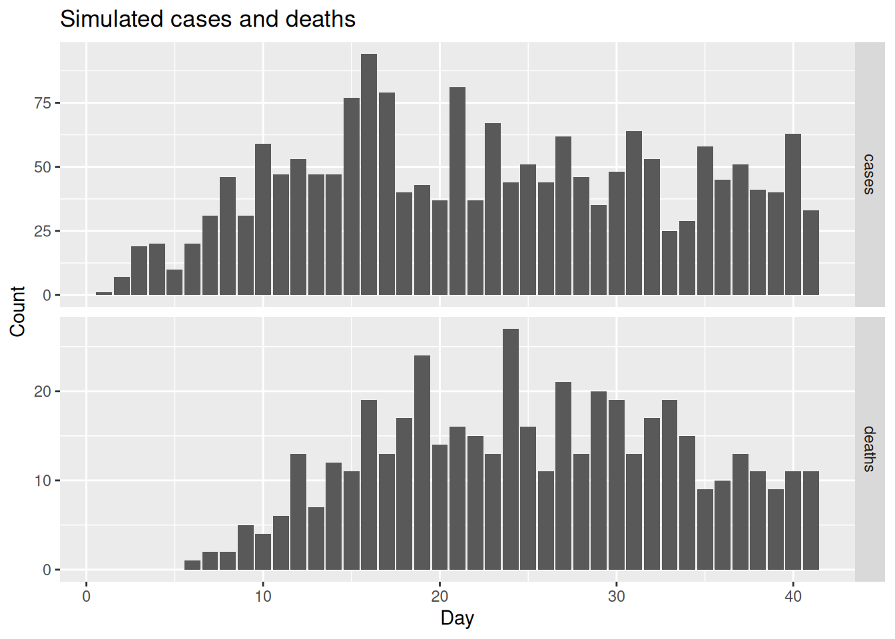
Prior predictive check
Workflow stage: prior predictive check. Before we fit anything, the workflow asks us to check that our priors alone can generate data in the right ballpark, not orders of magnitude too large or too small. We sample from the model with every likelihood switched off (use_* = 0), so the draws come only from the priors, and compare the implied cases and deaths with the data.
ww_placeholder_pmf <- censored_delay_pmf(rgamma, max = 10, shape = 2, rate = 1)
prior_data <- make_data(
cases = obs$cases, deaths = obs$deaths, ww = rep(0, n),
case_delay_pmf = case_delay_pmf,
death_delay_pmf = death_delay_pmf,
ww_delay_pmf = ww_placeholder_pmf
)
fit_prior <- fit_streams(prior_data, use_cases = 0, use_deaths = 0, use_ww = 0)The random-walk prior lets infections wander a long way before any data constrain them, so the upper limits of the prior predictive intervals run into the thousands. We clip them at twice the observed maximum so that the data stay visible; the bands really do extend far higher.
prior_obs <- bind_rows(
obs |> transmute(day, source = "cases", value = cases),
obs |> transmute(day, source = "deaths", value = deaths)
)
caps <- prior_obs |> group_by(source) |> summarise(cap = 2 * max(value))
prior_pp <- bind_rows(
fit_prior |> gather_draws(pp_cases[day]) |> mutate(source = "cases"),
fit_prior |> gather_draws(pp_deaths[day]) |> mutate(source = "deaths")
) |>
ungroup() |>
## the most explosive prior draws overflow the count RNG to NA; drop them
filter(is.finite(.value)) |>
group_by(source, day) |>
median_qi(.value, .width = c(0.3, 0.6, 0.9)) |>
left_join(caps, by = "source") |>
mutate(across(c(.value, .lower, .upper), \(x) pmin(x, cap)))
ggplot(prior_pp, aes(x = day, y = .value)) +
geom_lineribbon(
aes(ymin = .lower, ymax = .upper,
fill = ordered(.width, levels = c(0.9, 0.6, 0.3))),
colour = "#4292c6", linewidth = 0.8
) +
scale_fill_manual(
values = c("0.9" = "#eff3ff", "0.6" = "#c6dbef", "0.3" = "#9ecae1"),
name = "Credible interval"
) +
geom_point(data = prior_obs, aes(y = value), colour = "red", size = 0.8) +
facet_wrap(~source, scales = "free_y") +
labs(title = "Prior predictive check: cases and deaths",
subtitle = paste("Prior median and 30%, 60% and 90% credible intervals",
"(blue, clipped at top --\nthey extend far higher)",
"vs simulated data (red)"),
x = "Day", y = NULL)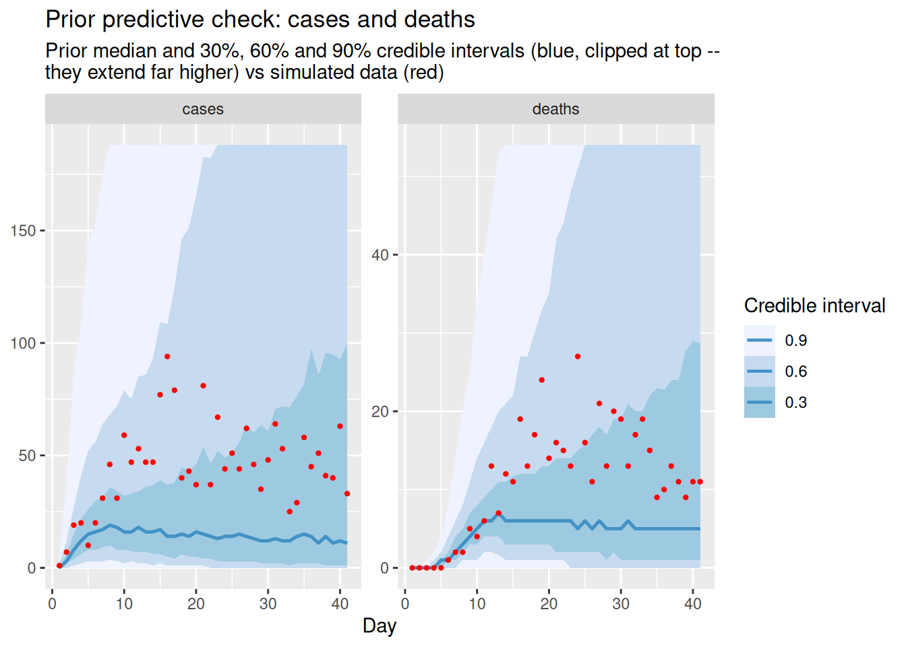
The data sit comfortably inside the prior intervals, so the priors are not obviously mis-scaled. Even the inner 30% interval spans a wide range, and the 90% interval is wider still, because the random-walk prior on \(R_t\) permits a lot of growth before any data constrain it, which is itself worth knowing before we fit.
NoteDo this at every step
A prior predictive check belongs at every step of the build, for each new sub-model. We show it once here, for the two count sources, for brevity.
Checking each data source on its own
Workflow stage: validate each sub-model independently. Before combining anything, the workflow tells us to check each sub-model on its own: can each data source, through its own delay and scaling, recover the shared infection process? This is the modular pay-off from breaking the DAG into components: we validate one branch at a time before we link them.
There is a subtlety here worth being explicit about, because it drives how we fit these single data sources. A single count data source only ever tells us about infections multiplied by its scaling: doubling the infections and halving the ascertainment gives exactly the same expected cases. So a data source identifies the trend of infections (and hence \(R_t\)) but not their absolute level. This is a property of the model rather than of having only one data source: as we will see, adding more data sources does not break the invariance, because each new data source arrives with its own free scaling. To recover the level from one data source we have to inform its scaling. We therefore give each single-source diagnostic fit a tight prior on that data source’s scaling, centred near the truth, as a deliberate device: it lets us check that the data source recovers the infection level, not just its shape.
## censored_delay_pmf() simulates, so dropping this apparently redundant
## call advances the RNG and changes every result below
ww_placeholder_pmf <- censored_delay_pmf(rgamma, max = 10, shape = 2, rate = 1)
cd_data <- make_data(
cases = obs$cases, deaths = obs$deaths, ww = rep(0, n),
case_delay_pmf = case_delay_pmf,
death_delay_pmf = death_delay_pmf,
ww_delay_pmf = ww_placeholder_pmf
)
cases_data <- cd_data
cases_data$ascertainment_p <- c(0.4, 0.03)
deaths_data <- cd_data
deaths_data$ifr_p <- c(0.1, 0.01)
fit_cases <- fit_streams(
cases_data, use_cases = 1, use_deaths = 0, use_ww = 0
)
fit_deaths <- fit_streams(
deaths_data, use_cases = 0, use_deaths = 1, use_ww = 0
)We extract the estimated infections from each single-source fit and compare them to the truth. With the scaling informed, each data source now recovers the infection level, not just the trend.
single_inf <- bind_rows(
fit_cases |> gather_draws(infections[day]) |> mutate(model = "cases only"),
fit_deaths |> gather_draws(infections[day]) |> mutate(model = "deaths only")
) |>
ungroup() |>
sample_draws(100)
ggplot(single_inf, aes(x = day)) +
geom_line(aes(y = .value, group = .draw), alpha = 0.05) +
geom_line(data = inf_df, aes(y = infections), colour = "red") +
facet_wrap(~model) +
labs(title = "Infections from single-source fits (grey) vs truth (red)",
x = "Day", y = "Infections")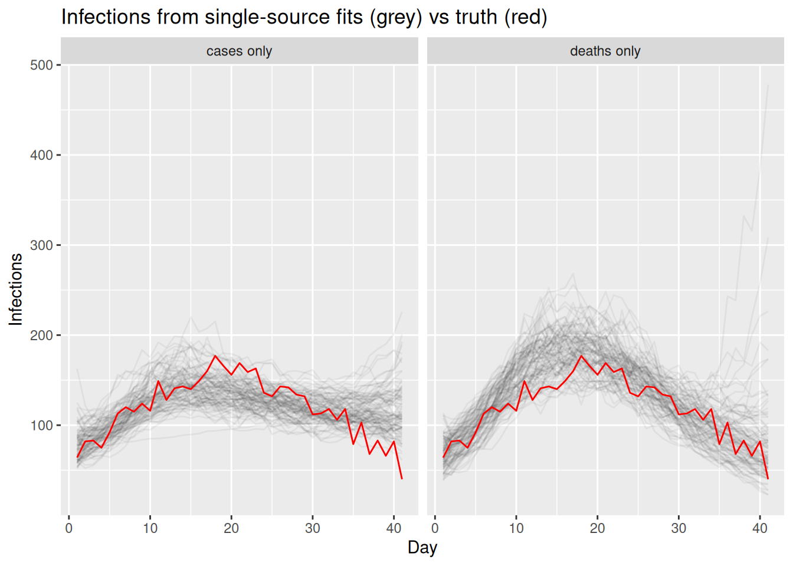
The reproduction number is recovered from each data source too. Unlike the level, \(R_t\) is a property of the trend, so each data source identifies it without any help from the scaling prior. We plot each single-source \(R_t\) estimate; we do not draw a “true” \(R_t\) line, because the quantity we are recovering is the latent \(R_t\) and we compare estimates to each other rather than to a known truth.
We pull the \(R_t\) draws out of a fit and label them with the model they came from often enough in what follows that it is worth a small helper.
r_draws <- function(fit, label) {
fit |>
gather_draws(R[day]) |>
ungroup() |>
mutate(model = label)
}single_r <- bind_rows(
r_draws(fit_cases, "cases only"),
r_draws(fit_deaths, "deaths only")
) |>
sample_draws(100)
ggplot(single_r, aes(x = day, y = .value, group = .draw)) +
geom_line(alpha = 0.05) +
geom_hline(yintercept = 1, linetype = "dashed") +
facet_wrap(~model) +
coord_cartesian(ylim = c(0.4, 2)) +
labs(title = "Rt from single-source fits (sampled trajectories)",
x = "Day", y = "Rt")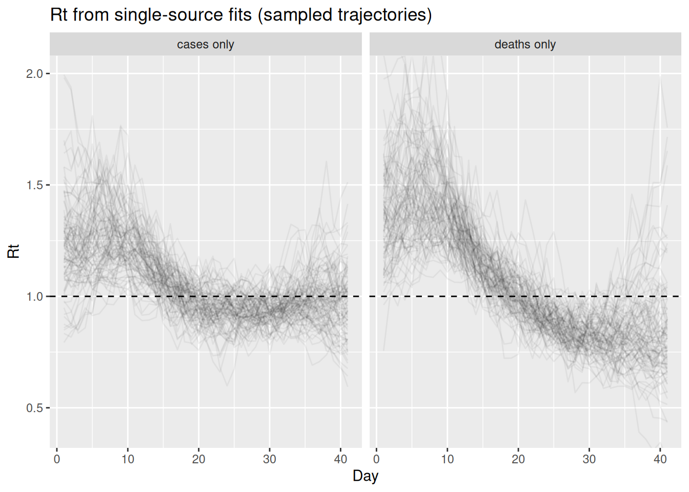
TipTake 2 minutes
Compare the two single-source fits. Which data source pins down the recent part of the infection curve (the right-hand end) more tightly, and why? What does the long infection-to-death delay do to the deaths-only fit near the present?
NoteSolution
The cases-only fit constrains the recent infections relatively well, because the infection-to-report delay is short, so recent infections still feed into observed cases. The deaths-only fit is much more uncertain near the present: with a long infection-to-death delay, recent infections have barely begun to show up in deaths, so the most recent infections are informed almost entirely by the prior. The longer, more dispersed death delay also blurs sharp changes, so turning points (when infections peak and turn over) are timed less precisely from deaths than from the timelier cases.
Part 3: introduce wastewater and fit it on its own
So far both data sources have been counts of people. We now introduce a third, very different data source: wastewater.
Wastewater surveillance measures the concentration of pathogen genetic material (e.g. viral RNA) shed into the sewage system. Because it samples whatever is in the sewer, it is a population-level signal that does not depend on people seeking testing or care, and it picks up infections regardless of whether they are ever ascertained as cases. That makes it an attractive complement to the count data sources: it can lead case reports, captures asymptomatic infection, and is relatively cheap to collect at the scale of a whole catchment.
We model it in a deliberately simple way that mirrors the other data sources: the signal is taken to be proportional to recent infections, via a short infection-to-shedding delay and a single scaling factor, and observed on the log scale with log-normal noise (a single site, with no normalisation or site effects).
NoteWhat this wastewater model skips over
Our one-delay, one-scaling, log-normal model is a deliberate caricature. A realistic wastewater model has to contend with at least the following, all of which we fold into that single delay and scale.
- Shedding kinetics. How much RNA an infected person sheds changes over the course of their infection, so the infection-to-signal map is really a shedding load curve rather than a single delay.
- Catchment and connectivity. Only part of the population drains to the sampled point, and that fraction is rarely known.
- Flow and dilution. Concentration depends on wastewater volume, which shifts with rainfall and industrial input, so signals are usually normalised (e.g. by flow or by a faecal marker such as PMMoV).
- In-sewer decay and travel time. RNA degrades and disperses between shedding and the sampling point, adding further delay and loss.
- Sampling and assay. Grab versus composite sampling, extraction efficiency, PCR noise and a limit of detection all shape the measurement.
- Multiple sites. Several catchments need site effects and spatial pooling rather than one shared scale.
Dedicated tools build these steps explicitly. See EpiSewer (Lison et al. 2025; Lison 2025) and the CDC ww-inference-model (K. Johnson et al. 2026), a fuller version of this kind of model that jointly fits wastewater and hospital admissions from a hierarchical renewal process (K. E. Johnson et al. 2026), to go further.
This is the third data source’s observation node. It is the same delay-scaling-then-observe pattern as the count data sources, but with a log-normal likelihood rather than Poisson:
if (use_ww) {
ww ~ normal(log(exp_ww), ww_sigma); // <1>
}- Wastewater: the log concentration is normal around the log of the expected signal, i.e. the signal itself is log-normal.
ww_delay_pmf <- censored_delay_pmf(rgamma, max = 10, shape = 2, rate = 1)
ww_scale <- 2
exp_ww <- ww_scale * convolve_with_delay(infections, ww_delay_pmf)
ww_obs_sd <- 0.35 # log-scale observation noise: larger = noisier signal
obs <- obs |>
mutate(ww = rnorm(n, log(exp_ww), ww_obs_sd))
NoteTake 2 minutes
The wastewater data source is modelled on the log scale with log-normal noise, whereas cases and deaths are counts, observed as negative-binomial and Poisson draws respectively. Why might a log-normal observation model be a more natural choice for a continuous concentration measurement than a count distribution?
NoteSolution
A wastewater concentration is a positive, continuous measurement rather than a count of discrete events, so a count distribution does not apply directly. Measurement error in such assays tends to be multiplicative (proportional to the signal) rather than additive, which a log-normal observation model captures well. Dedicated wastewater tools build a much richer shedding and measurement model than ours; see EpiSewer (Lison et al. 2025; Lison 2025) and the CDC ww-inference-model (K. Johnson et al. 2026) to go further.
Workflow stage: validate each sub-model independently. As with the other data sources, we first fit wastewater on its own to check it can recover the shared infections through its delay and scaling. We rebuild the data, now with the real wastewater data source, and give the single-source fit the same treatment as the counts: a tight prior on its scaling so it recovers the infection level and not only the trend.
full_data <- make_data(
cases = obs$cases, deaths = obs$deaths, ww = obs$ww,
case_delay_pmf = case_delay_pmf,
death_delay_pmf = death_delay_pmf,
ww_delay_pmf = ww_delay_pmf
)
ww_data <- full_data
ww_data$ww_scale_p <- c(2, 0.15)
fit_ww <- fit_streams(ww_data, use_cases = 0, use_deaths = 0, use_ww = 1)ww_inf <- fit_ww |>
gather_draws(infections[day]) |>
ungroup() |>
sample_draws(100)
ggplot(ww_inf, aes(x = day)) +
geom_line(aes(y = .value, group = .draw), alpha = 0.05) +
geom_line(data = inf_df, aes(y = infections), colour = "red") +
labs(title = "Infections, wastewater only (grey) vs truth (red)",
subtitle = "A short-delay data source on its own scale",
x = "Day", y = "Infections")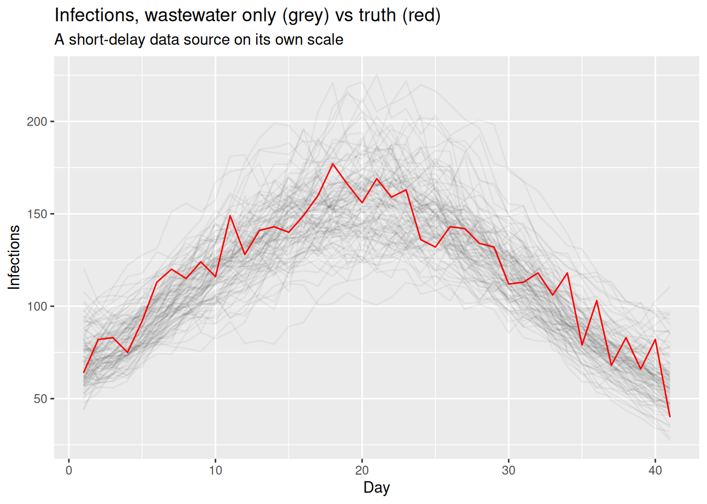
Wastewater identifies the trend through a short delay, so its \(R_t\) is informative right up to the recent end of the time series.
ww_r <- fit_ww |>
gather_draws(R[day]) |>
ungroup() |>
sample_draws(100)
ggplot(ww_r, aes(x = day, y = .value, group = .draw)) +
geom_line(alpha = 0.05) +
geom_hline(yintercept = 1, linetype = "dashed") +
coord_cartesian(ylim = c(0.4, 2)) +
labs(title = "Rt, wastewater only (sampled trajectories)",
x = "Day", y = "Rt")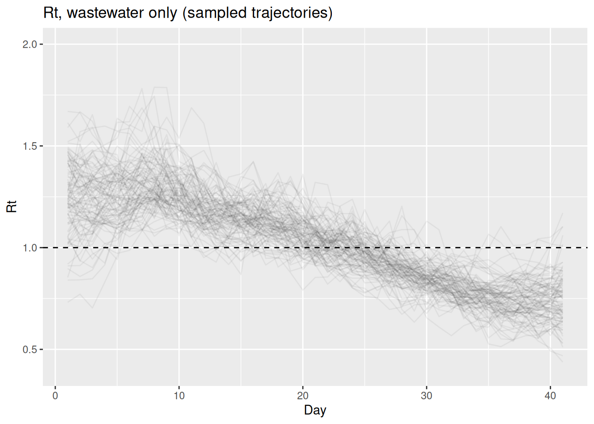
Part 4: add wastewater to the model
Workflow stage: data integration choice. Adding a data source is now just another integration step: switch wastewater on alongside cases and deaths. We again use the relaxed scaling priors from make_data: with three data sources tied to one shared infection level, we no longer need to pin any single scaling tightly.
fit <- fit_streams(
full_data, use_cases = 1, use_deaths = 1, use_ww = 1, adapt_delta = 0.95
)We look at the scalings and a few \(R_t\) values, so that we can compare how precisely each is estimated.
fit$summary(c("ascertainment", "ifr", "ww_scale", "R[1]", "R[20]", "R[41]"))# A tibble: 6 × 10
variable mean median sd mad q5 q95 rhat ess_bulk ess_tail
<chr> <dbl> <dbl> <dbl> <dbl> <dbl> <dbl> <dbl> <dbl> <dbl>
1 ascertainment 0.401 0.401 0.0398 0.0393 0.335 0.467 1.000 868. 827.
2 ifr 0.109 0.108 0.0108 0.0107 0.0907 0.126 0.999 794. 738.
3 ww_scale 1.92 1.92 0.186 0.181 1.62 2.24 1.000 822. 645.
4 R[1] 1.34 1.33 0.218 0.211 1.01 1.72 1.00 736. 541.
5 R[20] 0.996 0.991 0.0769 0.0681 0.879 1.13 1.00 1366. 780.
6 R[41] 0.850 0.838 0.137 0.118 0.647 1.09 1.000 1314. 882.We extract the posterior for the shared infections and reproduction number from the full three-source fit.
posteriors <- fit |>
gather_draws(infections[day], R[day]) |>
ungroup() |>
sample_draws(100)The infections are now informed by all three data sources at once:
inf_posterior <- posteriors |>
filter(.variable == "infections")
ggplot(inf_posterior, aes(x = day)) +
geom_line(aes(y = .value, group = .draw), alpha = 0.05) +
geom_line(data = inf_df, aes(y = infections), colour = "red") +
labs(title = "Infections, estimated (grey) and true (red)",
subtitle = "Joint model fit to cases, deaths and wastewater",
x = "Day", y = "Infections")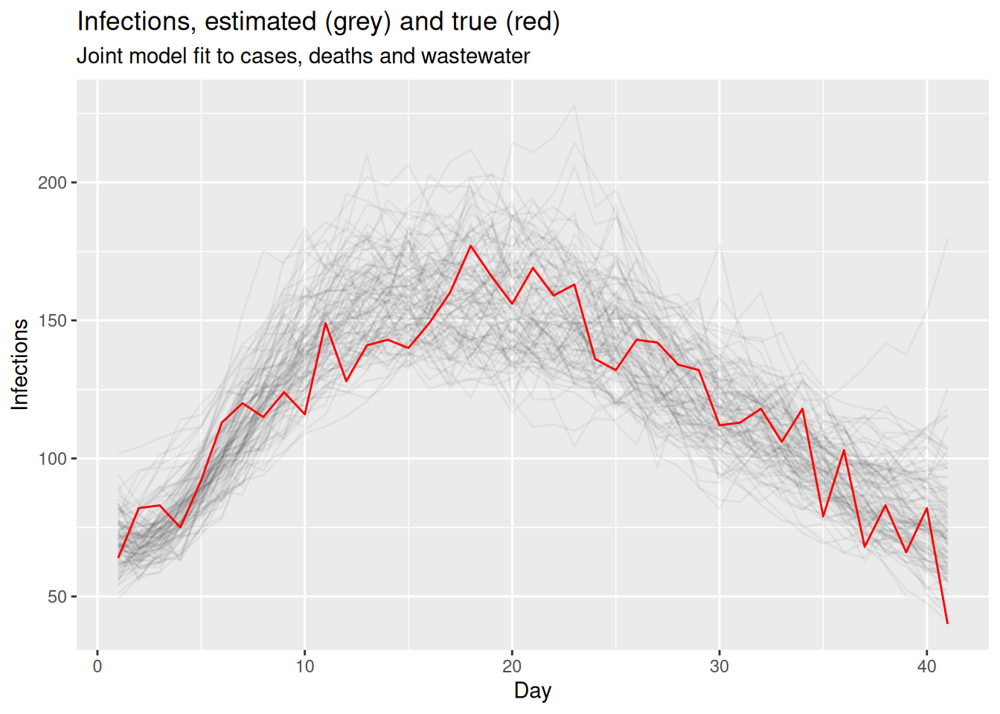
and so is the reproduction number.
r_posterior <- posteriors |>
filter(.variable == "R")
ggplot(r_posterior, aes(x = day, y = .value, group = .draw)) +
geom_line(alpha = 0.05) +
geom_hline(yintercept = 1, linetype = "dashed") +
coord_cartesian(ylim = c(0.4, 2)) +
labs(title = "Rt, joint model (sampled trajectories)",
subtitle = "Informed by cases, deaths and wastewater together",
x = "Day", y = "Rt")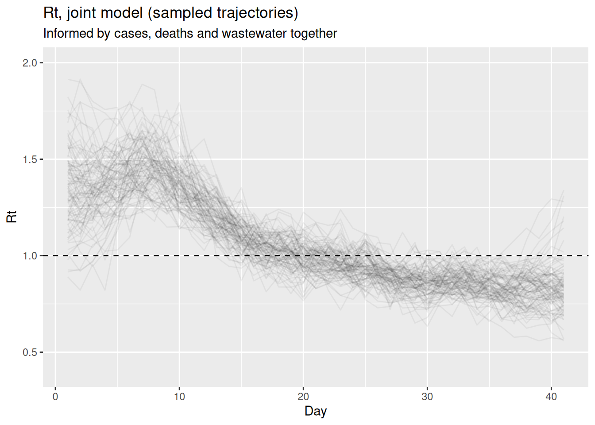
Seen on its own, the joint \(R_t\) says little about what each data source contributed to it, so we next place it side by side with the estimates from the other combinations of data sources.
Comparing \(R_t\) across data sources
Workflow stage: model checking. We have now fitted \(R_t\) from each data source on its own and from all three together. Filling in the two pairs we have not fitted yet lets us put every combination on one figure and see what each addition buys.
fit_cw <- fit_streams(
full_data, use_cases = 1, use_deaths = 0, use_ww = 1, adapt_delta = 0.95
)
fit_dw <- fit_streams(
full_data, use_cases = 0, use_deaths = 1, use_ww = 1, adapt_delta = 0.95
)Each single data source identifies \(R_t\) (a trend) on its own, but with different strengths: cases and wastewater are timely and sharpen the recent end, deaths are stable but blur it, and the joint fits borrow from all of them.
fits_by_model <- list(
"cases only" = fit_cases,
"deaths only" = fit_deaths,
"wastewater only" = fit_ww,
"cases + deaths" = fit_cd,
"cases + wastewater" = fit_cw,
"deaths + wastewater" = fit_dw,
"all three" = fit
)
r_by_model <- imap_dfr(fits_by_model, r_draws) |>
sample_draws(100) |>
mutate(model = factor(model, levels = names(fits_by_model)))
ggplot(r_by_model, aes(x = day, y = .value,
group = .draw, colour = model)) +
geom_line(alpha = 0.05) +
geom_hline(yintercept = 1, linetype = "dashed") +
facet_wrap(~model, nrow = 3) +
scale_colour_brewer(palette = "Dark2") +
guides(colour = guide_legend(override.aes = list(alpha = 1))) +
coord_cartesian(ylim = c(0.4, 2)) +
labs(title = "Rt from each single source, each pair, and the joint fit",
subtitle = "Sampled trajectories from each fit, coloured by model",
x = "Day", y = "Rt") +
theme(legend.position = "bottom")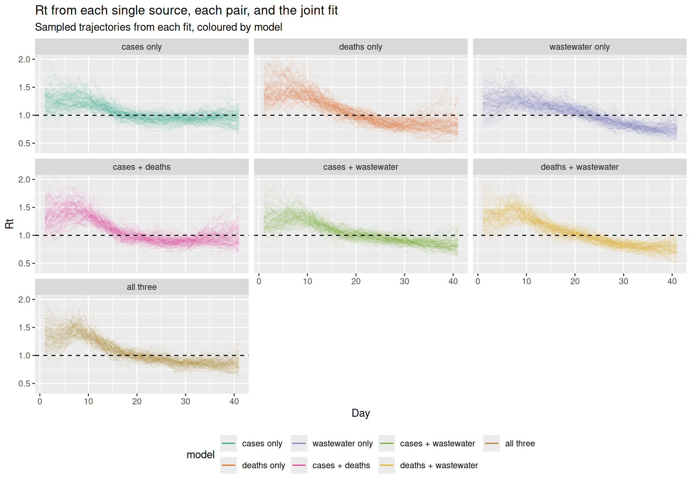
Checking the joint fit against every data source
Workflow stage: model checking. Before we trust the joint fit we should check it reproduces each data source it was fitted to. The model gives us posterior predictive draws for each data source (pp_cases, pp_deaths, pp_ww): simulated observations with each data source’s own observation noise, so we can compare them like for like with the data. We overlay sampled predictive trajectories for the shared infections and all three data sources against the simulated data.
levels_ppc <- c("infections", "cases", "deaths", "wastewater")
ppc_streams <- bind_rows(
fit |> gather_draws(infections[day]) |> mutate(stream = "infections"),
fit |> gather_draws(pp_cases[day]) |> mutate(stream = "cases"),
fit |> gather_draws(pp_deaths[day]) |> mutate(stream = "deaths"),
fit |> gather_draws(pp_ww[day]) |> mutate(stream = "wastewater")
) |>
ungroup() |>
group_by(stream) |>
sample_draws(100) |>
ungroup() |>
mutate(stream = factor(stream, levels = levels_ppc))
observed_streams <- bind_rows(
inf_df |> transmute(day, stream = "infections", value = infections),
obs |> transmute(day, stream = "cases", value = cases),
obs |> transmute(day, stream = "deaths", value = deaths),
obs |> transmute(day, stream = "wastewater", value = ww)
) |>
mutate(stream = factor(stream, levels = levels_ppc))
ggplot(ppc_streams, aes(x = day, y = .value)) +
geom_line(aes(group = .draw), alpha = 0.05) +
geom_point(data = observed_streams, aes(y = value),
colour = "red", size = 0.6) +
facet_wrap(~stream, scales = "free_y") +
labs(title = "Posterior predictive check: infections and each data source",
subtitle = paste("Sampled trajectories with observation error (grey)",
"vs simulated data (red)"),
x = "Day", y = NULL)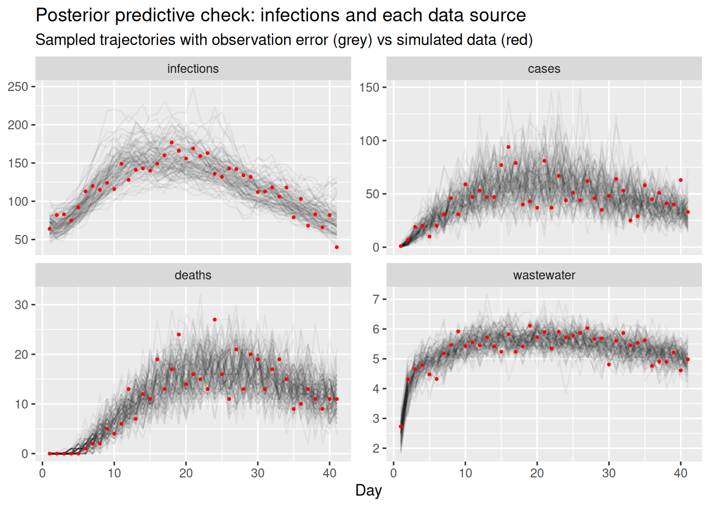
Each data source’s predictive draws should bracket its data (the infections panel shows the latent trajectory against the truth we simulated), which tells us the shared infection process is compatible with all three data sources at once.
NoteCheck as you build, not only at the end
We run this posterior predictive check once, on the full model, for brevity. In a real workflow it belongs at every step, after each single-source fit and after linking cases + deaths, so a poor fit surfaces as early as possible. A failed check is the workflow’s feedback arrow in action, sending you back to revise that source’s observation model before adding the next one.
TipTake 2 minutes
Compare the scaling parameters (ascertainment, ifr, ww_scale) in the fit$summary() output from the three-source fit in Part 4 with the priors we set for them (c(0.4, 0.06), c(0.1, 0.02), c(2, 0.3)). How much has the data narrowed each one? Why might the absolute level of infections be harder to pin down than the trajectory of \(R_t\)?
NoteSolution
The data narrows the scalings only modestly. Each posterior sits close to its prior mean, and its standard deviation is only somewhat smaller than the prior standard deviation, so the scalings stay pinned largely by prior information rather than by the data.
- Why the level is weak. Each data source constrains only infections times its scaling. Multiply the infections by a constant \(c\) and divide every scaling by \(c\), and each data source’s expected signal is unchanged, so the shape (and hence \(R_t\)) is identified but the absolute level is not.
- What pins the level here. Only prior information: the scaling priors, the prior on the seeded starting level
seed_base, and the<lower = 0, upper = 1>bounds onascertainmentandifr. Since \(I \to cI\) is exactlyseed_base\(\to c \times\)seed_base, that seeding prior constrains the level directly. - Adding sources does not fix it. Each new data source brings its own free scaling to absorb \(c\), so the invariance survives. The joint fit buys more prior information on the level (three scaling priors, not one), not identification.
- Why we still recover it here. Every scaling prior is centred on its simulated value and
seed_base ~ normal(I0, I0)on the true starting infections, so we are slightly cheating.
Real-time snapshots at day 20 and day 40
Workflow stage: model checking (fitness for real-time use). Everything above used the whole outbreak. In practice \(R_t\) estimation happens during an outbreak, when the data only run up to today. As in the renewal equation session and the nowcasting session, we can mimic this by truncating the data sources at a cutoff and refitting, so each fit sees only what would have been available at that point.
We take two snapshots: day 20, during the growth phase, and day 40, around the peak. We treat the day-40 estimate as our retrospective goal: with more of the outbreak observed it is the better-anchored estimate, so the question is how close each data source’s real-time day-20 estimate gets to that later, more complete view. At each cutoff we fit every single data source on its own and every pair of data sources, each running only up to its own cutoff, so we can see how each combination behaves in real time. Unlike the single-source level checks above, these snapshots use the standard (relaxed) scaling priors: \(R_t\) is a trend and is identified regardless of the scaling, so we do not need to inform the scale here. A small helper truncates the data and fits, reusing the same compiled model on the shorter series.
fit_at_cutoff <- function(cutoff, use_cases, use_deaths, use_ww, ...) {
keep <- seq_len(cutoff)
d <- make_data(
cases = obs$cases[keep], deaths = obs$deaths[keep], ww = obs$ww[keep],
case_delay_pmf = case_delay_pmf,
death_delay_pmf = death_delay_pmf,
ww_delay_pmf = ww_delay_pmf
)
fit_streams(d, use_cases, use_deaths, use_ww, ...)
}cutoffs <- c(20, 40)
model_specs <- list(
"cases only" = c(1, 0, 0),
"deaths only" = c(0, 1, 0),
"wastewater only" = c(0, 0, 1),
"cases + deaths" = c(1, 1, 0),
"cases + wastewater" = c(1, 0, 1),
"deaths + wastewater" = c(0, 1, 1),
"all three" = c(1, 1, 1)
)
rt_snapshots <- map_dfr(cutoffs, function(ct) {
map_dfr(names(model_specs), function(nm) {
f <- model_specs[[nm]]
ad <- if (sum(f) > 1) 0.95 else 0.8
fit_at_cutoff(ct, f[1], f[2], f[3], adapt_delta = ad) |>
gather_draws(R[day]) |>
ungroup() |>
group_by(day) |>
median_qi(.value, .width = 0.9) |>
mutate(model = nm)
}) |>
mutate(cutoff = ct)
}) |>
mutate(
model = factor(model, levels = names(model_specs)),
cutoff_label = factor(
if_else(cutoff == 20, "real-time (day 20)", "retrospective (day 40)"),
levels = c("real-time (day 20)", "retrospective (day 40)")
)
)We put both snapshots on one figure, coloured by cutoff and faceted three to a row, so the single sources fill the top row, the pairs the middle row, and the full three-source model sits on its own at the bottom. Within each panel we can then read the real-time (day 20) estimate against the retrospective (day 40) goal.
ggplot(rt_snapshots, aes(x = day, y = .value,
colour = cutoff_label, fill = cutoff_label)) +
geom_ribbon(aes(ymin = .lower, ymax = .upper), alpha = 0.15, colour = NA) +
geom_line(linewidth = 0.8) +
geom_hline(yintercept = 1, linetype = "dashed") +
facet_wrap(~model, ncol = 3) +
scale_colour_brewer(palette = "Set1") +
scale_fill_brewer(palette = "Set1") +
coord_cartesian(ylim = c(0.4, 2)) +
labs(title = "Real-time (day 20) vs retrospective (day 40) Rt",
subtitle = paste("Median and 90% CI; each fit uses only data up to its",
"cutoff, with day 40 the retrospective goal"),
x = "Day", y = "Rt", colour = NULL, fill = NULL) +
theme(legend.position = "bottom")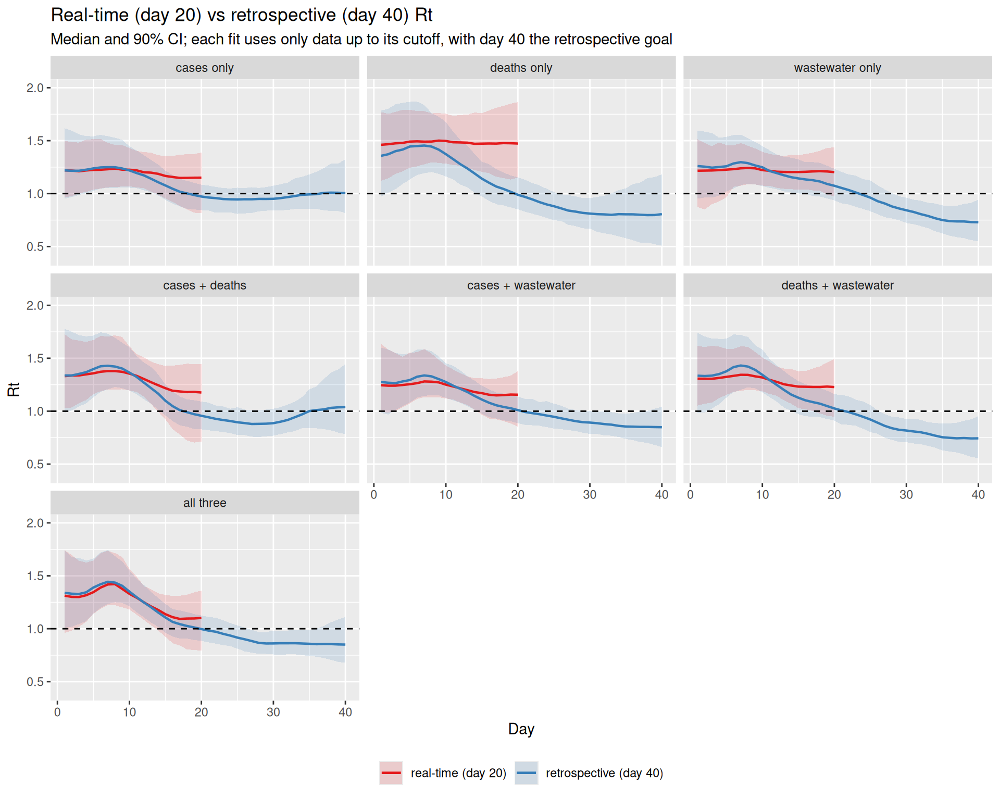
TipTake 5 minutes
The grid shows seven models at both cutoffs: three single sources (top row), three pairs (middle row), and the full three-source model (bottom row). In each panel compare the real-time (day 20) band with the retrospective (day 40) band over their overlapping days.
- Which single source’s day-20 estimate lands closest to its day-40 goal?
- Which pair does best, and what does adding a second source do to the day-20 estimate?
- Does the full three-source model beat the best pair in real time?
NoteSolution
The deaths carry signal at day 20, but it is old signal. Early on, the deaths-only estimate runs a little above its day-40 goal. It is the recent end that the deaths cannot see. Infections from the last week have barely begun to cause deaths, so the estimate holds \(R_t\) near the level the earlier data implied instead of turning it over.
- Single sources. Cases and wastewater have short delays, so they track the day-40 goal over almost the whole window. Deaths stay flat at about 1.5 while the goal is already near 1 by day 20, so they miss the turn.
- Pairs. Of the pairs, cases + wastewater is the closest and much the tightest, as two short-delay sources should be.
- What a second source buys. Adding a timely source to deaths pulls the estimate off the deaths-only plateau. Adding deaths to a source that is already timely does not help, and slightly degrades the recent end.
- Does the full model beat the best pair? It is the closest of the seven, but only just, and its interval is not the tightest. Once two timely sources are in, a third adds little.
- Every model overshoots at the recent end. The most recent infections are the least observed, so each estimate leans on the earlier, higher \(R_t\) and is slow to follow the epidemic down.
When data sources conflict
Combining data sources works well when they tell a consistent story, but real surveillance data sources can disagree. This is the feedback arrow in the workflow that we singled out earlier, where conflict between data sources reveals model misspecification.
What does it mean for data sources to conflict?
Because every data source is a delayed, scaled view of the same latent infections, each implicitly carries its own answer to the question “what must the infection trajectory have looked like?”. Two data sources conflict when those implied trajectories are incompatible. The cases imply infections that are falling while the deaths imply infections that are still rising, say, and no single \(R_t\) path can produce both at once.
Why does this happen in practice? The model assumes each data source is the shared infections convolved with a fixed delay and multiplied by a constant scaling. Conflict is what we see when one of those assumptions is wrong for at least one data source, for example:
- Changing ascertainment. A change in testing policy or test availability bends the case curve without any change in transmission, so the constant-ascertainment assumption breaks.
- Mis-specified delays. If the true infection-to-death delay is longer or more dispersed than the PMF we supplied, deaths will appear shifted relative to the infections the other data sources imply.
- Mis-specified scalings. A drifting infection fatality ratio (e.g. with changing age structure or treatment) or a reporting artefact pushes a data source off the level the others support.
- Truly different populations. Streams that sample different groups (e.g. hospital deaths vs community cases) need not share one infection process at all.
To see conflict in action we give it a concrete mechanism, a drifting infection fatality ratio. We re-simulate the deaths from the same shared infections as before, but let the death scaling rise over the second half of the outbreak (as it might if severity increased with age structure or a new variant). Cases and wastewater are unchanged. Under our constant-scaling model the rising deaths therefore look like a rising epidemic, which the flat-scaling cases and wastewater flatly contradict.
ifr_drift <- ifr * c(rep(1, 20), seq(1, 4, length.out = n - 20))
exp_deaths_conflict <-
ifr_drift * convolve_with_delay(infections, death_delay_pmf)
obs_conflict <- obs |>
mutate(deaths = rpois(n, exp_deaths_conflict))Fitting the constant-scaling model to conflicting data sources
We refit the same joint, three-source model, still assuming a constant death scaling, to this conflicting data, reusing the helpers and just swapping in the conflicting deaths.
data_conflict <- full_data
data_conflict$deaths <- obs_conflict$deaths
fit_conflict <- fit_streams(
data_conflict, use_cases = 1, use_deaths = 1, use_ww = 1, adapt_delta = 0.95
)We compare the \(R_t\) estimates from the consistent and conflicting fits.
r_consistent <- r_draws(fit, "consistent") |> sample_draws(100)
r_conflict <- r_draws(fit_conflict, "conflicting deaths") |> sample_draws(100)
ggplot(
bind_rows(r_consistent, r_conflict),
aes(x = day, y = .value, group = interaction(.draw, model), colour = model)
) +
geom_line(alpha = 0.05) +
geom_hline(yintercept = 1, linetype = "dashed") +
scale_colour_brewer(palette = "Set1") +
guides(colour = guide_legend(override.aes = list(alpha = 1))) +
coord_cartesian(ylim = c(0.4, 2)) +
labs(title = "Rt under consistent vs conflicting data sources",
x = "Day", y = "Rt", colour = NULL) +
theme(legend.position = "bottom")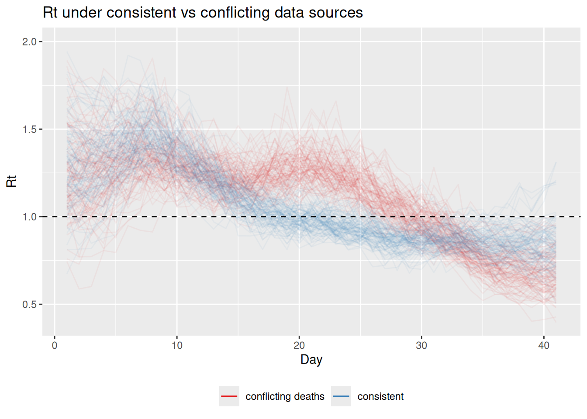
TipTake 2 minutes
How does the \(R_t\) estimate change when the deaths data source conflicts with the others? Is the result closer to the “true” declining \(R_t\), the rising signal implied by deaths, or somewhere in between?
NoteSolution
- Direction. Through the early part of the second half the conflicting-deaths fit pulls \(R_t\) upwards, away from the true declining trajectory, as it tries to accommodate the rising deaths. Later it over-compensates and dips below the consistent fit.
- Why. One shared infection process cannot be both declining (to match cases and wastewater) and rising (to match deaths), so the model splits the difference and the compromise wanders either side of the truth.
- Result. The joint \(R_t\) is faithful to no single data source, neither the true declining path nor the rising one the deaths imply.
TipInteractive: when data sources conflict
Drag the death-scaling drift to open a conflict, then let the scaling vary to snap the estimate back onto the truth.
How the joint model surfaces conflict
The \(R_t\) comparison above already hints at trouble, but in a real analysis we would not know the truth to compare against. So how would conflict actually announce itself? It shows up in three linked ways, and a good workflow looks for all of them.
1. Poor fit to one data source. The clearest symptom is a posterior predictive check. We simulate each data source from the fitted model, with its observation noise, and overlay it on the data. Because the shared infections are dragged towards a compromise, at least one data source ends up fitted badly. We draw the posterior predictive counts for each data source (pp_cases, pp_deaths, from each data source’s own likelihood) and compare sampled trajectories to the conflicting data.
pp_conflict <- fit_conflict |>
gather_draws(pp_cases[day], pp_deaths[day]) |>
ungroup() |>
group_by(.variable) |>
sample_draws(100) |>
ungroup()
obs_long <- obs_conflict |>
select(day, cases, deaths) |>
pivot_longer(-day, names_to = "stream", values_to = "value") |>
mutate(.variable = paste0("pp_", stream))
ggplot(pp_conflict, aes(x = day, y = .value)) +
geom_line(aes(group = .draw), alpha = 0.05) +
geom_point(data = obs_long, aes(y = value), colour = "red", size = 0.6) +
facet_wrap(~.variable, scales = "free_y") +
labs(title = "Posterior predictive fit under conflicting data sources",
subtitle = "Sampled predictive trajectories (grey) vs observed (red)",
x = "Day", y = NULL)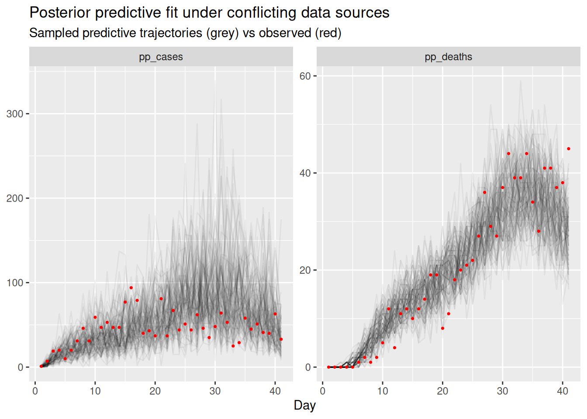
The compromise infection trajectory cannot match both data sources at once. Here the rising deaths pull the shared infections up, so the predictive draws for the cases run above the observed cases through the second half of the outbreak while the deaths are still fitted. A run of points sitting on one side of the predictive draws for a single data source is the sign that that data source is conflicting with the others.
2. Tension in the shared latent infections. Conflict does not stay neatly inside one data source. Because all data sources pull on the same infections, an irreconcilable data source distorts the shared trajectory itself, and hence \(R_t\), as we saw, and inflates its uncertainty as the sampler is pulled between two incompatible explanations. A latent quantity that suddenly becomes much more uncertain, or that no longer matches any data source when you propagate it back through the observation models, is a second symptom of conflict.
3. Degraded sampling. When the geometry of the posterior is contorted by trying to satisfy contradictory data, the sampler can struggle. That surfaces as divergent transitions, low effective sample sizes, or high rhat in the fit summary. It is the least reliable of the three symptoms, as we are about to see.
A whole-fit summary can only tell us that something is straining, not where, so alongside the worst value we also report which parameter it belongs to.
diagnostics <- function(f, label) {
s <- f$summary(c("R", "infections", "ascertainment", "ifr", "ww_scale"))
tibble(
fit = label,
max_rhat = round(max(s$rhat), 3),
worst_rhat_param = s$variable[which.max(s$rhat)],
min_ess_bulk = round(min(s$ess_bulk)),
worst_ess_param = s$variable[which.min(s$ess_bulk)],
divergences = sum(f$diagnostic_summary(quiet = TRUE)$num_divergent)
)
}
bind_rows(
diagnostics(fit, "consistent"),
diagnostics(fit_conflict, "conflicting deaths")
)# A tibble: 2 × 6
fit max_rhat worst_rhat_param min_ess_bulk worst_ess_param divergences
<chr> <dbl> <chr> <dbl> <chr> <dbl>
1 consistent 1.00 infections[22] 736 R[1] 0
2 conflictin… 1.02 infections[10] 542 infections[3] 0Even this is a summary across every parameter. In a real check we would scan rhat and ess_bulk per parameter (the full fit$summary() output), because a single badly-behaved parameter is easy to hide in a whole-fit maximum, and which parameter it is often points straight at the part of the model that is struggling.
TipTake 5 minutes
Look at the posterior predictive plot and at the diagnostics printed above.
- How well is each count source fitted, and in which direction does the model miss on each?
- Which data source would you suspect of being the misspecified one, and why?
- Which of the assumptions in the list above would you relax first?
- Do the sampler diagnostics look worse than for the consistent fit?
NoteSolution
Neither count source is fitted well, and that is the point. The compromise infection trajectory cannot satisfy both at once, so the model misses in opposite directions. From about day 15 the observed cases sit below the bulk of the predictive draws (the model over-predicts them), while the later deaths ride the top edge of their draws, with the last few points at or above it. The shared infections are being dragged up by the rising deaths, which a constant death scaling can only explain as more infections, and the cases pay for it.
Why suspect the deaths. The posterior predictive check tells us the sources disagree, but not which one is wrong; that takes an argument, and two things point at the deaths.
- The other two sources agree with each other. Cases and wastewater have different delays, different scalings and different likelihoods, yet they imply the same declining infections. It is more plausible that the one source out of step is misspecified than that the two independent ones are wrong in the same way.
- The mismatch grows over time. A constant error in a scaling would offset a source by a constant factor, and a wrong delay would shift or blur its timing. What we see instead is a gap that widens through the second half, which is the signature of something in the deaths branch drifting.
So the assumption to relax first is the constant death scaling, and we do exactly that below. Note we are cheating slightly, because we built the drift in, so we know the answer. On real data this step is a hypothesis, and the check is whether relaxing that assumption reconciles the sources without breaking anything else.
The sampler diagnostics barely move. The only sign of strain is the effective sample size. So it is the posterior predictive check, not the sampler, that exposes this conflict.
What should a modeller do about conflict?
It is worth being clear about what the shared latent process does and does not do here. Sharing one infection process across data sources surfaces a conflict (the symptoms above) and yields a single compromise estimate, but it does not resolve the disagreement. The compromise is faithful to no data source and, as we have seen, can be actively misleading about \(R_t\).
NoteOptions for resolving conflict
When a model check flags conflict between data sources, there are several potential responses (Presanis et al. 2013; De Angelis and Presanis 2018; Gelman et al. 2026):
- Model the differing mechanism. Extend the model so the suspected source of divergence is explicit, such as a time-varying ascertainment or IFR, a re-estimated or more dispersed delay, or data source-specific reporting effects. This is the default when the data sources really do observe the same infections (De Angelis and Presanis 2018; Nicholson et al. 2022).
- Expand or relax the observation model. Allow overdispersion, or weaken an over-confident likelihood, so a data source is no longer forced onto a level it cannot support.
- Down-weight or drop a data source. If a data source measures a truly different population, or carries an artefact you cannot model, it may be right to exclude it, but only once you understand why (Presanis et al. 2013).
- Revisit the data. Conflict is sometimes a data problem (a definition change, a reporting glitch) rather than a model problem, and is best fixed upstream.
Conflict diagnostics in Bayesian evidence synthesis make this formal by quantifying how much each source disagrees with the rest before deciding what to do (Presanis et al. 2013).
We will do the first of these and model the mechanism behind the divergence. The reasoning in the solution above pointed at the deaths (they are the one source out of step with the other two, and their mismatch widens over time rather than sitting at a constant offset), so the assumption we relax is the constant IFR, and we let the death scaling follow its own random walk over time. The model already has a switch for this, tv_death_scale; setting it to 1 turns the scalar ifr into a geometric random walk.
data_resolved <- data_conflict
data_resolved$tv_death_scale <- 1
fit_resolved <- fit_streams(
data_resolved, use_cases = 1, use_deaths = 1, use_ww = 1, adapt_delta = 0.95
)First, does it now fit the deaths? We repeat the posterior predictive check, comparing the constant-scaling and time-varying-scaling fits.
ppc_for <- function(fit, label) {
fit |>
gather_draws(pp_cases[day], pp_deaths[day]) |>
ungroup() |>
group_by(.variable) |>
sample_draws(100) |>
ungroup() |>
mutate(model = label)
}
resolved_draws <- bind_rows(
ppc_for(fit_conflict, "constant scaling"),
ppc_for(fit_resolved, "time-varying death scaling")
)
ggplot(resolved_draws, aes(x = day, y = .value)) +
geom_line(aes(group = .draw), alpha = 0.05) +
geom_point(data = obs_long, aes(y = value), colour = "red", size = 0.6) +
facet_grid(.variable ~ model, scales = "free_y") +
labs(title = "Posterior predictive fit: before and after modelling the drift",
subtitle = "Sampled predictive trajectories (grey) vs observed (red)",
x = "Day", y = NULL)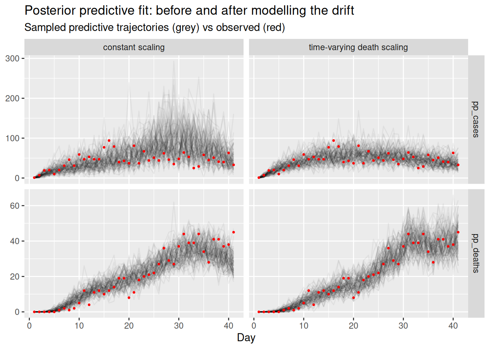
Letting the death scaling drift lets the deaths panel track the rising data without dragging the shared infections up, so both data sources are fitted well at once. We can confirm that \(R_t\) no longer chases the deaths. We add the original fit to the consistent data as a reference, since that is the estimate we would like to recover.
r_resolved <- bind_rows(
r_draws(fit, "consistent data (reference)"),
r_draws(fit_conflict, "constant scaling"),
r_draws(fit_resolved, "time-varying death scaling")
) |>
sample_draws(100)
ggplot(r_resolved, aes(x = day, y = .value,
group = interaction(.draw, model), colour = model)) +
geom_line(alpha = 0.05) +
geom_hline(yintercept = 1, linetype = "dashed") +
scale_colour_brewer(palette = "Set1") +
guides(colour = guide_legend(override.aes = list(alpha = 1))) +
coord_cartesian(ylim = c(0.4, 2)) +
labs(title = "Rt before and after modelling the drifting death scaling",
subtitle = "With the fit to the consistent data as a reference",
x = "Day", y = "Rt") +
theme(legend.position = "bottom")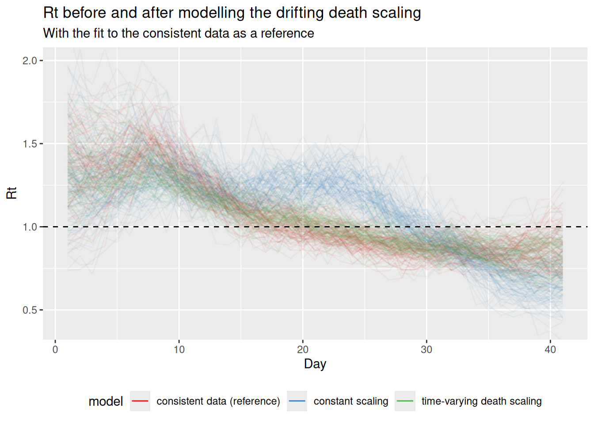
fit_resolved |>
gather_draws(death_scale[day]) |>
median_qi(.value, .width = 0.9) |>
ggplot(aes(x = day, y = .value)) +
geom_ribbon(aes(ymin = .lower, ymax = .upper), alpha = 0.3) +
geom_line() +
geom_line(
data = tibble(day = seq_len(n), .value = ifr_drift),
colour = "red"
) +
labs(title = "Recovered death scaling (black) vs truth (red)",
x = "Day", y = "Death scaling")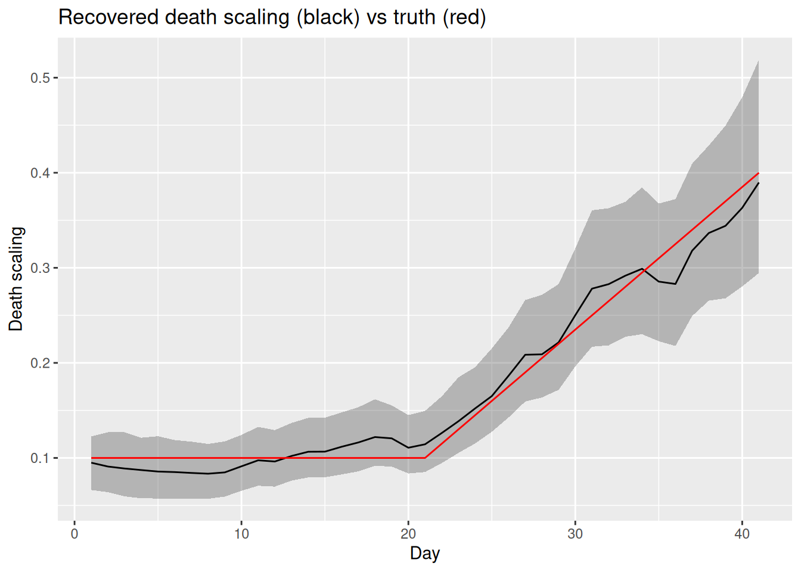
We can also compare the sampler diagnostics of the two fits.
bind_rows(
diagnostics(fit_conflict, "constant scaling"),
diagnostics(fit_resolved, "time-varying death scaling")
)# A tibble: 2 × 6
fit max_rhat worst_rhat_param min_ess_bulk worst_ess_param divergences
<chr> <dbl> <chr> <dbl> <chr> <dbl>
1 constant s… 1.02 infections[10] 542 infections[3] 0
2 time-varyi… 1.01 R[30] 394 R[1] 0
TipTake 5 minutes
Compare the two fits. Does the time-varying-scaling model fit both the cases and the deaths? Has \(R_t\) returned to the true declining trajectory, and are the sampler diagnostics of fit_resolved better than fit_conflict? Does the recovered death scaling track the drift we built in?
NoteSolution
Modelling the mechanism reconciles the data sources. With a time-varying death scaling the deaths are fitted well and the cases are no longer over-predicted, because the rising deaths are now explained by a rising scaling rather than by rising infections. The case predictive draws tighten around the data, which is the clearest sign that the compromise has gone. \(R_t\) returns to the declining trajectory the cases and wastewater imply, and the recovered death scaling tracks the drift we built in. The sampler diagnostics improve, but modestly. The effective sample size recovers.
This loop of building in parts, checking each addition, and letting conflict and identifiability send us back to revise is the core of this modelling workflow (Abbott et al. 2026).
Everything here has been on simulated data, where we know the truth and can check that the model recovers it. That is the point of building and testing on simulated data first. Once the model is tested and checked this way, the same workflow repeats on real data: the same steps of designing and breaking up the DAG, building in parts, and using model checks to send us back to revise, but now without a known truth to compare against, so the posterior predictive checks and conflict diagnostics from this session do the work of telling us whether the model is adequate.
Going further
Scope
This session extended the renewal-with-delays model to multiple parallel data sources. We kept it to renewal plus convolutions and did not bring in nowcasting or the reporting triangle: each data source here is assumed fully observed up to the present. Combining this multi-source approach with the nowcasting models from the joint nowcasting session is a natural next step.
Challenge
- We used a negative binomial for cases (with an overdispersion parameter) but kept deaths Poisson. Following the same pattern, how would you also make the deaths overdispersed, and when might that matter?
- We resolved the conflict by letting the death scaling drift. Following the same pattern as
tv_death_scale, how would you add a time-varying ascertainment to absorb a conflict driven by a change in testing policy? Which data source conflicts would that be able to absorb, and which would it not?
Methods in practice
epidemiaimplements joint renewal-equation models of cases and deaths of the kind introduced here (Scott et al. 2021).EpiSeweris a Bayesian generative model for estimating transmission dynamics from a wastewater signal, with a carefully specified shedding and measurement model (Lison et al. 2025; Lison 2025).- The CDC’s wastewater-informed modelling work jointly fits wastewater concentration data and epidemiological count data to produce nowcasts and forecasts (K. Johnson et al. 2026; K. E. Johnson et al. 2026). Unlike our deliberately single-site example, it combines multiple wastewater sites with hierarchical structure – a multi-site, multi-resolution extension of the ideas in this session.
epinowcastis a flexible Bayesian nowcasting framework that can also jointly fit multiple datasets (for example several reporting streams, sites or strata), sharing structure across them through partially pooled modules (Sam Abbott et al. 2024).ComposableTuringIDModels.jlis a Julia prototype that builds this kind of multi-source model from swappable, composable components, an example of tooling designed to make the modular workflow in this session easier than it is in a single Stan file.- The workflow paper itself works through schematic case studies (no code) that apply these steps to real modelling problems, a useful set of worked examples of the workflow we followed here (Abbott et al. 2026).
Wrap up
- Review what you’ve learned in this session with the learning objectives
- Share your questions and thoughts
References
Abbott, Sam et al. 2026. A Workflow for Infectious Disease Modelling. Manuscript and code repository. https://github.com/seabbs/a-workflow-for-infectious-disease-modelling.
De Angelis, Daniela, and Anne M. Presanis. 2018. “Analysing Multiple Epidemic Data Sources.” arXiv Preprint arXiv:1808.04312. https://arxiv.org/abs/1808.04312.
Gelman, Andrew, Aki Vehtari, Richard McElreath, et al. 2026. Bayesian Workflow. Chapman & Hall/CRC Press. https://avehtari.github.io/Bayesian-Workflow/.
Johnson, Kaitlyn E., George G. Vega Yon, Samuel P. C. Brand, Christian Bernal Zelaya, Damon Bayer, et al. 2026. Bayesian Generative Modeling for Heterogeneous Wastewater Data Applied to COVID-19 Forecasting. medRxiv. https://doi.org/10.64898/2026.02.23.26346887.
Johnson, Kaitlyn, Dylan Morris, Sam Abbott, et al. 2026. ww-inference-model: Jointly Infer Infection Dynamics from Wastewater Data and Epidemiological Indicators. Centers for Disease Control and Prevention, Center for Forecasting and Outbreak Analytics. https://github.com/CDCgov/ww-inference-model.
Lison, Adrian. 2025. EpiSewer: Estimate Epidemiological Parameters from Wastewater Measurements. https://github.com/adrian-lison/EpiSewer.
Lison, Adrian, Rachel McLeod, Jana S. Huisman, et al. 2025. “Robust Real-Time Estimation of Pathogen Transmission Dynamics from Wastewater.” medRxiv, ahead of print, October. https://doi.org/10.1101/2025.10.23.25338640.
Nicholson, George, Marta Blangiardo, Sylvia Richardson, and Chris Holmes. 2022. “Interoperability of Statistical Models in Pandemic Preparedness: Principles and Reality.” Statistical Science 37 (2): 183–206. https://doi.org/10.1214/22-STS854.
Presanis, Anne M., David Ohlssen, David J. Spiegelhalter, and Daniela De Angelis. 2013. “Conflict Diagnostics in Directed Acyclic Graphs, with Applications in Bayesian Evidence Synthesis.” Statistical Science 28 (3): 376–97. https://doi.org/10.1214/13-STS426.
Sam Abbott, Adrian Lison, Sebastian Funk, et al. 2024. Epinowcast: A Bayesian Framework for Real-time Infectious Disease Surveillance. https://doi.org/10.5281/zenodo.5637165.
Scott, James A., Axel Gandy, Swapnil Mishra, Juliette Unwin, Seth Flaxman, and Samir Bhatt. 2021. Epidemia: An R Package for Semi-Mechanistic Bayesian Modelling of Infectious Diseases Using Point Processes. arXiv:2110.12461. arXiv. https://doi.org/10.48550/arXiv.2110.12461.